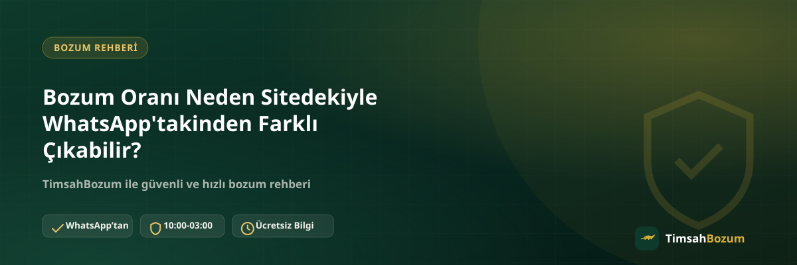

Bozum yapmak isteyen pek çok kişi, sitede gördüğü oranla WhatsApp'ta karşılaştığı oranın birebir aynı olmasını bekler. Küçük bir fark gördüğünde ise genelde "yanlış mı okudum" ya da "burada bir sorun mu var" diye düşünür. Oysa bu durum çoğu zaman gayet normal bir sebepten kaynaklanır. Bu yazıda oranların neden değişebildiğini, bunun neyi ifade ettiğini ve işlem öncesi neye dikkat etmen gerektiğini anlatıyoruz.
Bozum Oranı Nedir, Nasıl Belirlenir?
Bozum oranı, kod veya bakiyenin hangi yüzdesi karşılığında nakit ödeme alacağını gösteren değerdir. Her hizmetin kendine özgü bir oranı vardır ve bu oranlar hizmetin türüne, işlem hacmine ve piyasa koşullarına göre belirlenir. Site üzerinde yayınlanan oranlar, kullanıcıya genel bir fikir vermek için güncellenen referans değerlerdir.
Sitedeki Oran ile Anlık Oran Neden Farklı Görünebilir?
Piyasa koşulları gün içinde değişebildiği için sitedeki oran ile o anki güncel oran arasında küçük bir fark oluşabilir. Bu, bir hata değil, doğal bir güncelleme sürecidir. Sitedeki değer en son güncellenen referans oranı yansıtırken, WhatsApp üzerinden teyit edilen oran işlemin yapılacağı anki gerçek değeri gösterir. Bu yüzden işlem öncesi her zaman güncel oranı sormak en doğru adımdır.
Oran Farkı Güvenilir mi, Dolandırıcılık Belirtisi midir?
Küçük bir oran farkı başlı başına bir güvenlik sorunu değildir; tam tersine, oranın anlık olarak teyit edilmesi işlemin şeffaf yürüdüğünün göstergesidir. Asıl dikkat etmen gereken nokta, oranın resmi WhatsApp hattımız (+90 543 887 21 71) dışında bir yerden teyit edilip edilmediğidir. Farklı bir numaradan veya platformdan (Instagram DM, başka bir telefon numarası gibi) gelen bir oran teklifi varsa, bilgi paylaşmadan önce mutlaka resmi hattan doğrulama yap.
Hangi Hizmetlerde Oran Daha Sık Güncellenir?
Genel olarak tüm hizmetlerde oran zaman zaman güncellenebilir, ancak bakiye tabanlı hizmetlerde (Pokus, Paycell, Vodafone ve Türk Telekom mobil ödeme, Turkcell mobil ödeme) bu güncellemeler piyasa hareketliliğine bağlı olarak biraz daha sık hissedilebilir. Kod tabanlı hizmetlerde (Razer Gold, iTunes) ise oran genellikle daha istikrarlıdır çünkü kodun tam değeri tek seferde değerlendirilir, kısmi bozum söz konusu değildir. Turkcell mobil ödeme bozdurma işlemi doğrudan yapıldığında farklı, müşterinin Paycell hesabı üzerinden yapıldığında farklı bir oranla ilerleyebilir; bu yüzden bu hizmette teyit adımı özellikle önemlidir.
Oranı WhatsApp'tan Teyit Etmek Neden Önemli?
Oranı teyit etmeden işleme başlamak, ileride "beklediğim oran bu değildi" gibi bir yanlış anlaşılmaya yol açabilir. WhatsApp'tan mesaj attığında kod veya bakiye bilginin türünü belirtip güncel oranı sorman, hem senin hem karşı tarafın aynı bilgiye dayanarak ilerlemesini sağlar. Teyit adımını atlayıp direkt "bozdurmak istiyorum" deyip beklemek, süreci uzatmaktan başka bir işe yaramaz.
Teyit Edilen Oran İşlem Sırasında Değişir mi?
Bilgini paylaşıp oranı karşılıklı teyit ettikten sonra o oran üzerinden ilerlenir; işlem devam ederken oran tekrar değişmez. Değişiklik yalnızca yeni bir işlem başlatıldığında ya da uzun bir süre teyit sonrası işlem başlatılmadığında söz konusu olabilir. Bu yüzden oranı teyit ettikten sonra makul bir süre içinde işlemi tamamlamak, tekrar teyit gerekliliğini önler.
Oran Teyidi Ne Kadar Sürer?
Oran teyidi, mesajının hat tarafından görülmesiyle birlikte hızlıca gerçekleşir. Çalışma saatlerimiz (10:00-03:00) içinde yazdığın bir mesaj kısa sürede yanıtlanır. Bu saatlerin dışında gönderdiğin mesajlar ise hat açıldığında sırasıyla değerlendirilir; mesajın kaybolmaz, sadece yanıt biraz gecikir.
İşlem Öncesi Oran Farkıyla Karşılaşırsan Ne Yapmalısın?
Sitede gördüğün oranla WhatsApp'ta karşılaştığın oran arasında fark varsa, önce panik yapmana gerek yok. Bunun güncel piyasa koşullarından kaynaklanan normal bir durum olduğunu bilerek, karşındaki hattan güncel oranı net şekilde teyit et. Teyit ettiğin oranı beğenmezsen işlemi başlatmak zorunda değilsin; oran teyidi bir sözleşme değil, sadece bilgilendirmedir.
Güncel oranı öğrenmek ve işlemini başlatmak için mobil ödeme bozdurma sayfamıza göz atabilir ya da doğrudan WhatsApp hattımıza yazabilirsin.
Oran Farkını Fırsata Çevirmenin Bir Yolu Var mı?
Oran farkı bir "fırsat" değil, doğal bir dalgalanmadır; bu yüzden oranın yükselmesini bekleyip işlemi ertelemek her zaman avantajlı sonuç vermez. En sağlıklı yaklaşım, işlem yapmaya karar verdiğin anda güncel oranı teyit edip o oran üzerinden ilerlemektir. Uzun süre bekleyip "belki oran artar" diye düşünmek, hem süreci uzatır hem de kod veya bakiyenin elinde beklemesine sebep olur.
Teyit Ettiğin Oranı Kaydetmek İşine Yarar mı?
WhatsApp üzerinden teyit ettiğin oranı sohbet geçmişinden silmemek, işlem sonrasında sana referans olarak fayda sağlar. Özellikle birden fazla kod veya bakiye bozduracaksan, hangi tutarın hangi oranla değerlendirildiğini görebilmek karışıklığı önler. Bu basit alışkanlık, hem senin hem de karşı tarafın aynı bilgiye dayanarak ilerlemesini sağlar ve olası bir yanlış anlaşılmayı baştan engeller.
Farklı Hizmetlerde Oran Teyidi Nasıl İşler?
Kod tabanlı hizmetlerde (Razer Gold, iTunes) teyit adımı tek bir işlem üzerinden yürür: kodun tam değeri paylaşılır, güncel oran teyit edilir ve o oran üzerinden ilerlenir. Bakiye tabanlı hizmetlerde (Pokus, Paycell, Vodafone, Türk Telekom ve Turkcell mobil ödeme) ise kısmi bozum mümkün olduğu için, bozdurmak istediğin tutarı belirtip o tutar üzerinden oranı teyit etmen gerekir. Turkcell mobil ödemede işlemin doğrudan mı yoksa Paycell hesabı üzerinden mi yürüyeceği de oranı etkileyen bir detay olduğundan, bu bilgiyi ilk mesajında netleştirmek süreci hızlandırır.
İlgili Yazılar
- Bozum Oranları Neden Hizmetten Hizmete Değişir?
- En Güvenilir Mobil Ödeme Bozdurma Sitesi Nasıl Seçilir?
- Bozum İşlemi Yaparken Nelere Dikkat Etmeli